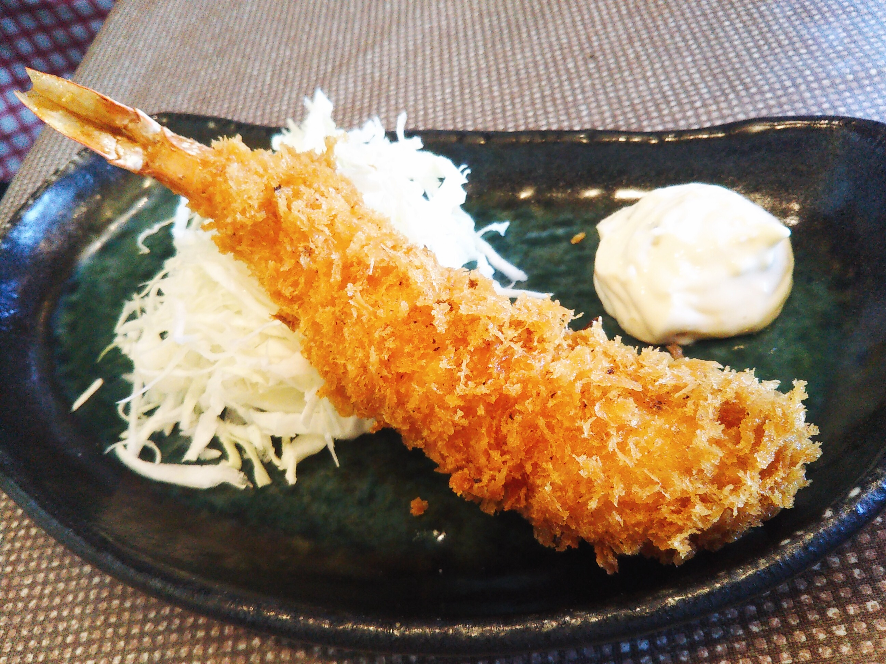
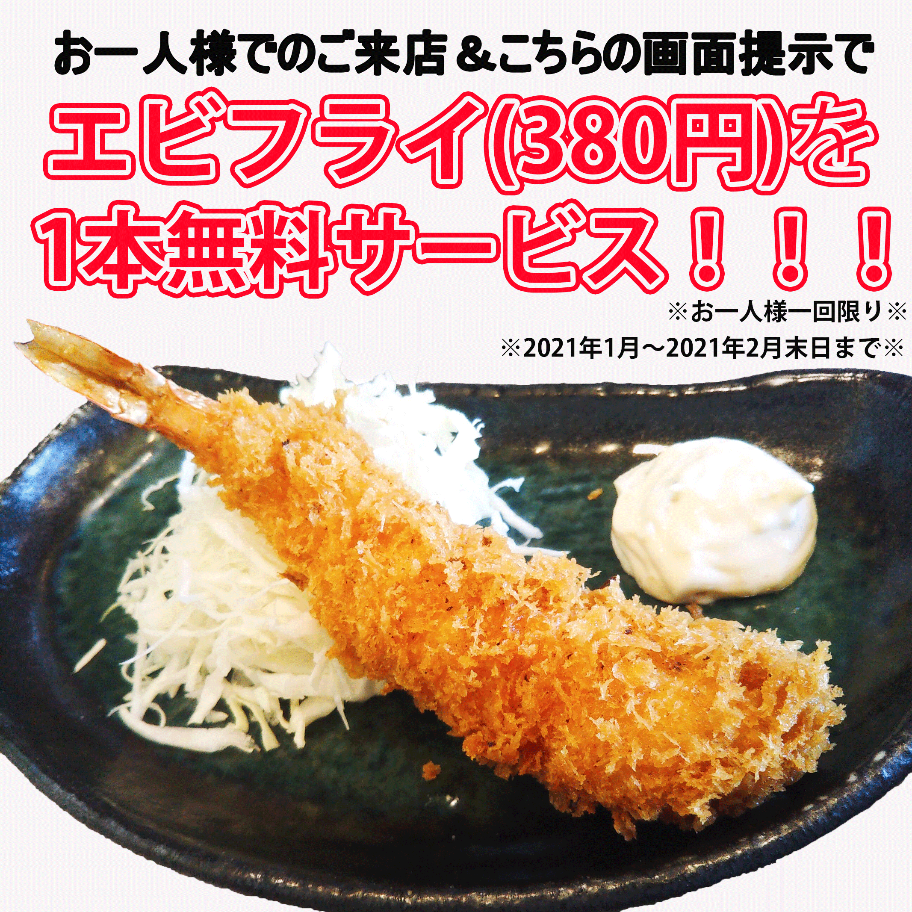

学習内容
| 学習方法 | スキル |
| 既存の画像を再現 | 画像の切り抜き・合成 |
| オリジナル画像を作成 | 文字入れ |
| 学習方法 | スキル |
| 学習サイトの動画を閲覧・実践 | 基本操作程度 |
| WEBサイトを作成 | ・・・ |

作品
再現バナー
本来の画像を参考に作成し再現いたしました。
オリジナルバナー
大人数でのが外出自粛のこの時代に、お一人様のご来店を促すためのバナーを作成いたしました。
 自己PR
現職で、ECサイトを運営する店舗様のHTMLで画像挿入や回遊リンクの設置など簡単なページ作りのサポートを行っています。
コードを書いて画面が思うように切り替わることに楽しみを感じます。
また、本当に小さなズレでまったく反映しなかったときに、問題点を見つけて修正し反映することに心から達成感を感じます。
そこで、プライベートで独自のWEBページを作成してみました。
その際にこれまで使用したことがなかったCSSをWEBの学習サイトで学びました。
これまでは商品ページのごく一部にしか携わっていなかったので、
1ページを作成することは正直予想以上に複雑で、全体を1からデザインすることに難しさを感じました。
コードを書くのもデザインをするのも、イメージして書いたことが実際に画面へ反映されたときはすごくスキルの自信に繋がりました。
もっとページ全体など広い範囲の全体を理解・把握した上でページを作りたいと思いました。
当初はWEBサイトの作成はコーディングだけに目を向けておりましたが、デザインも含めて作れるようになりたいと思いデザイナーへの転職を希望いたします。
1日でも早くよりスキルを高め、自走できるデザイナーへと成長していきたいと考えております。
何卒宜しくお願い申し上げます。